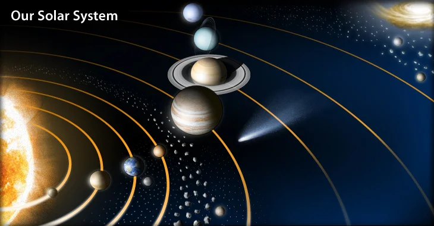

Planetas
Los planetas son cuerpos astronómicos que giran alrededor de una
estrella en nuestro caso, el Sol siguiendo una órbita estable.
A diferencia de las estrellas, los planetas no generan su propia luz,
sino que reflejan la luz de su estrella.
Según la Unión Astronómica Internacional (UAI), para que un cuerpo sea
considerado planeta debe cumplir tres condiciones:

- Orbitar alrededor de una estrella.
- Tener suficiente masa para que la gravedad le dé una forma casi esférica.
- Haber limpiado su órbita de otros objetos.
Clasificación de los planetas del Sistema Solar
- Planetas rocosos (o terrestres)Planetas rocosos (o terrestres)
- Tienen superficie sólida y están compuestos principalmente por roca y metal.
- Son los más cercanos al Sol.
- Ejemplos: Mercurio, Venus, Tierra y Marte.
- Planetas gigantes (o jovianos)
- Son mucho más grandes, formados en su mayoría por gas y líquidos.
- No tienen superficie sólida definida.
-
Se dividen en:
- Gigantes gaseosos: Júpiter y Saturno.
- Gigantes helados: Urano y Neptuno (con más hielo y compuestos como metano y amoníaco).
Volver al inicio